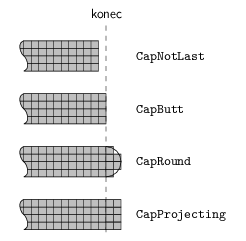
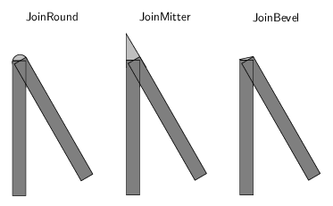
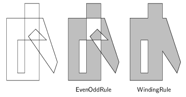
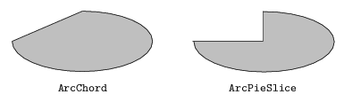
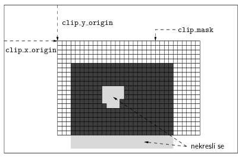
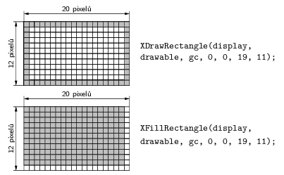
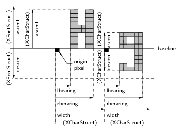

X Window System byl vyvíjen tak, aby mohl pou¾ívat ¹irokou ¹kálu grafických karet a monitorù, od jednoduchých s nìkolika málo stupni ¹edi a¾ po truecolor s 24 i více bity barevné informace na pixel. Pou¾ívá bitmapovou grafiku a barevná hodnota pixelu se v¾dy na výslednou barvu pøepoèítává prostøednictvím barevné palety. Typ palety a zpùsob pøepoètu definuje visual. Jako základní barevný model se pou¾ívá RGB, který je v¹ak device-dependent, tj. stejnì zadaná barva mù¾e na rùzných monitorech vypadat jinak. Od verze X11R5 je mo¾né pou¾ívat device-independent specifikace barev Xcms (X Color Management System). Urèitá barva zadaná v nìkterém z Xcms barevných prostorù by mìla vypadat stejnì na ka¾dém správnì zkalibrovaném monitoru. Kromì zadání barvy pomocí hodnot jejích slo¾ek v nìkterém barevném prostoru je mo¾né pou¾ívat jména barev. X má tabulku pro pøevod mezi jmény a hodnotami barev.
X rozli¹uje virtuální palety definované pro jednotlivá okna a fyzickou paletu, kterou pou¾ívá grafický adaptér pro zobrazování. Window manager instaluje virtuální palety do fyzické pomocí XInstallColormap. Jestli¾e nelze souèasnì instalovat v¹echny virtuální palety, window manager se sna¾í instalovat alespoò palety patøící aktuální aplikaci – typicky té, v jejím¾ oknì je kurzor my¹i – a tím zajistit její správné zobrazení. Okna ostatních aplikací pak mohou být zobrazena v nesprávných barvách. Klient si alokuje polo¾ky palety voláním funkcí XAllocColor, XAllocNamedColor, XcmsAllocColor, nebo XcmsAllocNamedColor. V¾dy je potøeba zadat barvu a a funkce vrátí index do palety, tj. hodnotu pixelu, kterou je potøeba pou¾ít pøi kreslení, aby se zobrazila po¾adovaná barva. Takto alokované polo¾ky palet jsou read-only, tzn. jejich barvu nelze dodateènì mìnit. Jejich výhoda je, ¾e mohou být sdíleny nìkolika klienty. Pokud je paleta mìnitelná, dají se v ní alokovat kromì read-only i read/write polo¾ky. Taková polo¾ka nemù¾e být sdílená. Klient, který ji alokoval, mù¾e kdykoliv zmìnit její obsah a tím zmìnit barvu v¹ech pixelù, je¾ byly nakresleny s hodnotou odpovídající indexu této polo¾ky.
Typy palet pou¾itelné na urèité obrazovce závisí na tom, jaké visuals podporuje X server. Pro obrazovky schopné zobrazovat pouze stupnì ¹edi existují tøídy visuals GrayScale (mìnitelná paleta) a StaticGray (nemìnná paleta). Paleta je jednoslo¾ková, hodnota pixelu se interpretuje jako index do palety a v polo¾ce palety se najde odpovídající hodnota jasu. Barevné obrazovky s malou bitovou hloubkou – nejèastìji 8 bitù – pou¾ívají tøídy visuals PseudoColor (mìnitelná paleta) a StaticColor (nemìnná paleta). Paleta je opìt jednoslo¾ková, ale polo¾ka palety se interpretuje jako 3 hodnoty pro barevné slo¾ky R, G a B. Pøi pou¾ití velké bitové hloubky – napø. 24 bitù – by jednoslo¾ková paleta byla pøíli¹ velká (224 polo¾ek). Proto existují tøídy visual DirectColor (nemìnná paleta) a TrueColor (mìnitelná paleta). Ty mají tøíslo¾kové palety. Hodnota pixelu se rozdìlí na tøi èísla. Ka¾dé se pou¾ije jako index do jedné èásti palety pro jednu barevnou slo¾ku. Výsledné hodnoty dají dohromady barvu. Pøi 8 bitech na ka¾dou slo¾ku je takto potøeba pouze 3.28 polo¾ek palety. Na dne¹ních grafických kartách se typicky pou¾ívá visual TrueColor s barevnou hloubkou 24 bitù, kdy hodnoty pixelù jsou stejné, jako obsah pøíslu¹ných polo¾ek palety, tak¾e paleta pozbývá na významu.
Mno¾ina grafických primitiv v X je relativnì malá, ale doplòují ji rùzná roz¹íøení, napø. Render pro 2D grafiku vèetnì antialiasovaného textu a OpenGL pro 3D grafiku. My se zde zamìøíme pouze na základní grafické mo¾nosti X bez roz¹íøení. Kreslit se v X dá do tzv. drawables, co¾ jsou okna a pixmapy. Pixmapa je bitmapový obrázek ulo¾ený na serveru. Obsah pixmapy se dá zkopírovat do okna pomocí XCopyArea nebo XCopyPlane.
Parametry kreslení se dr¾í na serveru v grafickém kontextu. V po¾adavku na nakreslení grafického elementu se pak zadávají pouze souøadnice bodù a ID grafického kontextu, ale nemusí se pøená¹et hodnoty v¹ech parametrù. Grafický kontext se vytváøí funkcí XCreateGC a ru¹í funkcí XFreeGC. Jeho obsah lze mìnit pomocí XChangeGC nebo XCopyGC, popø. je mo¾né individuálnì nastavovat jednotlivé parametry: XSetLineAttributes, XSetFileRule, XSetFunction, atd. Hodnoty v grafickém kontextu se dají i èíst voláním XGetGCValues. Zále¾í na konkrétní situaci, zda je lep¹í mít jeden grafický kontext a mìnit jeho parametry, nebo si pøedem pøipravit nìkolik rùznì nastavených grafických kontextù.
Funkce XSetLineAttributes a XSetDashes nastavují parametry èar. Základní parametr je tlou¹»ka èáry. Speciální hodnota 0 znamená èáru o ¹íøce 1 pixel kreslenou rychlej¹ím algoritmem ne¾ ostatní èáry. Èáry s tlou¹»kou 0 se mohou na rùzných serverech li¹it, èáry s tlou¹»kou vìt¹í vypadají v¹ude stejnì. Dále se zadává styl èáry: LineSolid (plná èára), LineOnOffDash (pøeru¹ovaná èára) a LineDoubleDash (èára kreslená støídavì barvou popøedí a pozadí). Druhý a tøetí styl pou¾ívají definici délek úsekù pøeru¹ované èáry v parametrech dashes a dash_offset. Mo¾nosti zakonèení èáry jsou na obr. 1. Varianta CapNotLast funguje jen pro èáry ¹íøky 0 a 1. Pokud se jedním po¾adavkem nakreslí nìkolik spojených èar, dá se nastavit zpùsob propojení v místech napojení jednotlivých èar, viz obr. 2.

Obr. 1: Zakonèení èar

Obr. 2: Spojení èar
Pro kreslení textu je nutné v grafickém kontextu nastavit font pomocí XSetFont. Pøed pou¾itím je nutné nahrát font funkcí XLoadFont. Kdy¾ potøebujeme znát metriky jednotlivých znakù, mù¾eme volat XLoadQueryFont. Ka¾dý font je v pamìti pouze jednou, server ho uvolní z pamìti, kdy¾ ho v¹ichni klienti pøestanou pou¾ívat, tj. skonèí nebo zavolají XFreeFont èi XUnloadFont.
Pro kreslení vyplnìných polygonù je nutné specifikovat pravidlo pro vyplòování (fill_rule). Varianty jsou EvenOddRule (bod je vyplnìn, jestli¾e nekoneènì dlouhý paprsek vycházející z tohoto bodu protíná obrys v lichém poètu prùseèíkù), nebo WindingRule (paprsek protíná rùzný poèet levotoèivých a pravotoèivých segmentù obrysu). Rozdíl mezi tìmito dvìma pravidly je vidìt na obr. 3. Dva zpùsoby vyplòování obloukù (arc_mode) jsou ukázány na obr. 4.

Obr. 3: Vyplòování polygonù

Obr. 4: Vyplòování obloukù
Standardnì se pøi kreslení provádí oøezávání podle obrysu okna, tj. nelze kreslit mimo okno. Pomocí parametru subwindow_mode se dá zapnout oøezávání i podle synovských oken (ClipByChildren, standardní nastavení, kdy synovské okno le¾í na rodièi a zakrývá ho) nebo kreslení pøes obsah synovských oken (IncludeInferiors). Oblast ovlivnìnou kreslením lze dále redukovat nastavením oøezávací masky (clip_mask, funkce XSetClipMask, XASetClipRectangles a XSetRegion). To je bitmapa urèující, které pixely se budou pøekreslovat a které zùstanou nezmìnìny. Pøíklad oøezávací masky je na obr 5, kde se z ¹edého obdélníku nakreslí jen tmavì ¹edá èást.

Obr. 5: Oøezávání
Kreslení vyplnìných oblastí se øídí parametrem fill_style. Nejjednodu¹¹í je vyplòování barvou popøedí (FillSolid) nastavenou v parametru foreground. Druhá mo¾nost je pou¾ít pro vyplòování pixmapu (FillTiled). Tøetí varianta (FillStippled) je pou¾ití bitmapy (pixmapy s 1 bitem na pixel). Kreslit barvou popøedí se budou pouze ty pixely, je¾ mají v bitmapì hodnotu 1. Poslední zpùsob vyplòování je FillOpaqueStipled, kdy se barvou popøedí kreslí pixely s hodnotou 1 v bitmapì a barvou pozadí pixely s hodnotou 0. Ve speciálních pøípadech je mo¾né zmìnou plane_mask nastavit, ¾e kreslení bude pracovat jen s nìkterými bitovými rovinami okna. Normálnì se stará hodnota pixelu zapomene a nahradí se novì kreslenou hodnotou. Je ale mo¾né tyto dvì hodnoty zkombinovat po jednotlivých bitech. K dispozici je v¹ech 16 existujících binárních funkcí dvou binárních promìnných.
Xlib poskytuje funkce na kreslení jednotlivých bodù (XDrawPoint), úseèek (XDrawLine), lomených èar (XDrawLines, XDrawSegments a XFillPolygons), obdélníkù (XDrawRectangle, XDrawRectangles, XFillRectangle a XFillRectangles) a obloukù (XDrawArc, XDrawArcs, XFillArc a XFillArcs). Funkce zaèínající na XDraw kreslí jen obrysy. Funkce zaèínající na XFill kreslí vyplnìné objekty. Poèet objektù, je¾ lze nakreslit jedním voláním, závisí na maximální velikosti po¾adavku X protokolu. Toto maximum – udávané v jednotkách o velikosti 4 bajty) se dá zjistit voláním XMaxRequestSize. Maximum minus 3 udává maximální poèet bodù. Poèet úseèek a obdélníkù je polovièní, poèet obloukù je tøetinový. Ve¹keré rozmìry se udávají v pixelech. Je nutné si dávat pozor na to, ¾e stejnì zadané rozmìry znamenají pøi kreslení obrysù a vyplnìných objektù nìco jiného, jak je znázornìno na obr. 6.

Obr. 6: Obrys a vyplnìní
X Window System podporuje 8bitové a 16bitové fonty. Kreslení øetìzcù pomocí fontu nastaveného v grafickém kontextu provádí funkce XDrawString a XDrawString16. Tyto funkce kreslí pouze jednotlivé znaky barvou popøedí. Alternativnì lze pou¾ít XDrawImageString a XDrawImageString16, které navíc kolem textu nakreslí obdélník (bounding box) barvou pozadí. Nìkolik øetìzcù na jednom øádku se dá nakreslit jedním voláním XDrawText nebo XDrawText16. Pro ka¾dý øetìzec se specifikuje font a horizontální posun vùèi konci pøedchozího øetìzce. Pozice textu pøi kreslení se zadává pomocí souøadnic zaèátku úèaøí (baseline).
V rámci podpory jiných jazykù ne¾ angliètiny se v X11R5 kromì jednoho fontu dá pou¾ít i sada fontù (XFontSet), co¾ je mno¾ina fontù obsahujících dohromady v¹echny znaky potøebné pro zobrazení textu v urèitém locale (národním prostøedí). Pro zobrazení textu pøibyly funkce s prefixem Xwc, je¾ pou¾ívají øetìzce typu wchar_t *, tj. s vícebajtovými znaky s pevným poètem bajtù na ka¾dý znak. Dále pøibyly funkce s prefixem Xmb. Ty pou¾ívají øetìzce typu char *, kde mohou být rùzné znaky kódovány rùzným poètem bajtù. V XFree86 existují navíc funkce s prefixem Xutf8 pro práci s Unicode øetìzci v kódování UTF-8. X11R6 pøineslo dal¹í zobecnìní zavedením výstupních metod.
Seznam dostupných fontù lze zjistit pomocí XListFonts a XListFontsWithInfo. Jména fontù se zadávají ve formì XLFD (X Logical Font Description). Ka¾dý font má jméno skládající se z èástí oddìlených pomlèkami, napø. -misc-fixed-bold-r-normal--13-120-75-75-c-70-iso8859-2. Jednotlivé èásti jména definují vlastnosti fontu, napø. rodinu fontù (fixed), velikost v pixelech (13), velikost v bodech (120) a kódování (iso8859-2). Dají se pou¾ívat wildcardy, napø. -*-*-medium-i-*--10-*-*-75-*-*-*-2. X server vybere první odpovídající font. Pokud v seznamu získaném funkcí XListFonts nebo utilitou xlsfonts narazíme na jméno fontu, které obsahuje nulovou velikost, jedná se o ¹kálovatelný font. Ve volání XLoadFont mù¾eme nulu nahradit libovolným èíslem a tím nastavit potøebnou velikost fontu. Aby bylo mo¾né vypisované texty správnì umístit na obrazovku, je nutné znát rozmìry jednotlivých znakù – metriky fontu a v¹ech jeho znakù. Tyto informace je mo¾né získat pomocí funkcí XQueryFont a XLoadQueryFont ve formì struktur XFontStruct (metriky fontu) a XCharStruct (metriky znakù). Význam metrických informací je vidìt na obr. 7.

Obr. 7: Metriky fontù